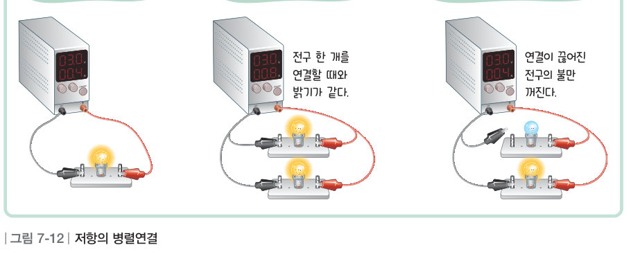
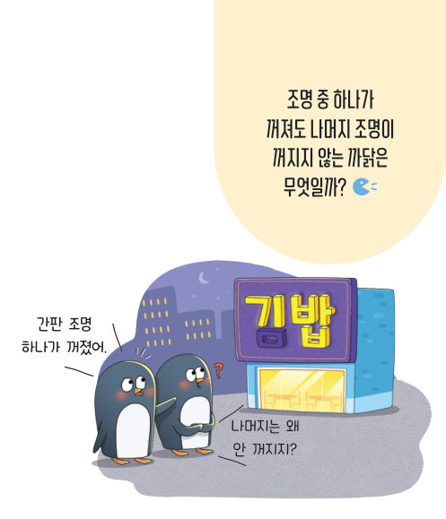
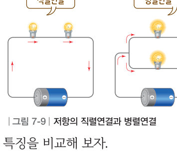
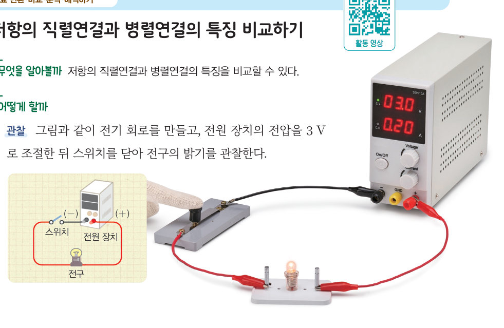
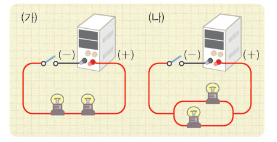
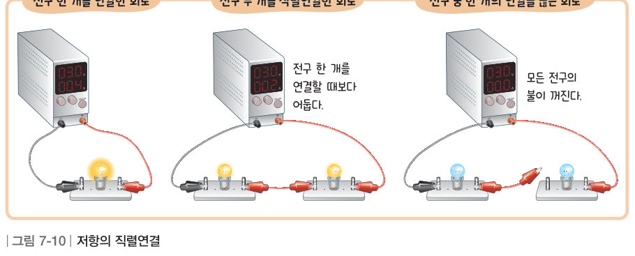
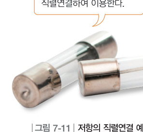
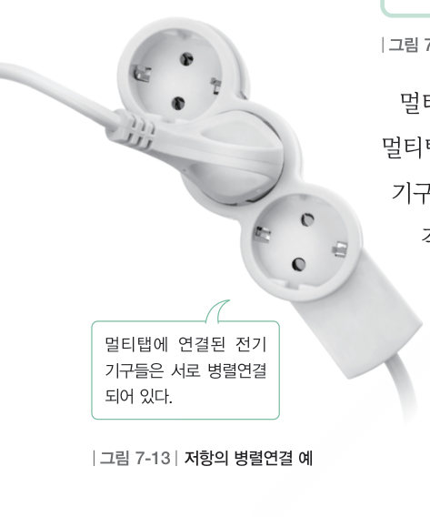
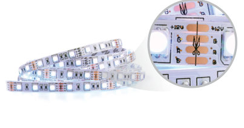

간판 조명 하나가 꺼져도 나머지 조명이 꺼지지 않는 까닭은 무엇일까? 가상 실험실에서 전구를 직렬과 병렬로 연결하고 하나씩 끊어 보며 밝기, 전류, 전압을 비교해 보자.
전기 회로에서 전류가 흐르는 하나의 경로에 두 개 이상의 저항을 일렬로 연결하는 방법을 저항의 직렬연결이라고 한다. 또 전류가 흐르는 경로가 둘 이상으로 갈라지고 각 경로에 저항을 연결하는 방법을 저항의 병렬연결이라고 한다.



| (가) 직렬연결한 전구 | |
| (나) 병렬연결한 전구 |
| (가) 직렬연결 | |
| (나) 병렬연결 |
전구 두 개를 직렬연결하면 각 전구의 밝기는 전구 한 개만 연결할 때 전구의 밝기보다 어둡다. 이는 각 전구에 흐르는 전류의 세기가 감소하기 때문이다. 저항을 직렬연결하면 회로 전체의 저항은 커지고, 회로 전체에 흐르는 전류의 세기는 감소한다. 전구를 직렬연결한 회로에서는 전류가 하나의 경로를 통해서 흐르기 때문에 각 전구에 흐르는 전류의 세기가 같으며, 전구 한 개의 연결이 끊어지면 모든 전구의 불이 꺼진다.
퓨즈는 전기 기구의 회로에 직렬로 연결하여 이용한다. 이때 회로에 과도하게 센 전류가 흐르면 퓨즈가 끊어져 회로에 흐르는 전류가 차단되므로 전기 기구를 보호할 수 있다.


전지에서 출발한 전자가 전구에 도달해야 켜진다고 생각할 수 있다. 그러나 펌프를 작동할 때 수도관에 있는 물 전체가 움직이기 시작하는 것처럼, 스위치를 닫을 때에도 도선의 전자들이 모두 동시에 움직이기 시작하기 때문에 두 전구의 불이 동시에 켜진다.
전구 두 개를 병렬연결하면 각 전구의 밝기는 전구 한 개만 연결할 때 전구의 밝기와 같다. 이는 각 전구에 걸리는 전압이 전구 한 개를 연결할 때와 동일하여 같은 세기의 전류가 흐르기 때문이다. 저항을 병렬연결하면 각 저항에 걸리는 전압은 같고, 회로 전체의 저항이 작아지므로 회로 전체에 흐르는 전류의 세기가 증가한다. 전구를 병렬연결한 회로에서는 전구가 전원에 각각 연결되어 전구 한 개의 연결이 끊어져도 다른 전구는 불이 꺼지지 않는다.
멀티탭이나 건물의 전기 배선은 병렬연결을 이용한다. 따라서 멀티탭에 여러 전기 기구를 연결해도 각 전기 기구에 같은 전압이 걸리며, 다른 전기 기구의 영향을 받지 않고 켜거나 끌 수 있다. 다만 많은 전기 기구를 동시에 사용하여 각각의 전기 기구에 흐르는 전류가 모이면 멀티탭의 전선에 과도하게 센 전류가 흘러 화재가 날 수 있다. 따라서 많은 전기 기구를 멀티탭에 한꺼번에 연결하여 사용하지 않도록 주의해야 한다.

일상생활에서 저항의 직렬연결과 병렬연결을 활용하는 예를 조사하고, 저항의 연결 방법에 따른 특징을 상황에 따라 어떻게 활용하는지 이야기해 보자.
| 퓨즈와 전기 기구 | |
| 멀티탭에 꽂은 여러 전기 기구 | |
| 집 안의 전등과 콘센트 | |
| 손전등 속에 일렬로 넣은 건전지 | |
| 전등과 그 전등을 켜고 끄는 스위치 |

| ② 각 저항에 걸리는 전압이 전체 전압과 같다. | |
| ③ 각 저항에 흐르는 전류의 세기가 같다. | |
| ④ 저항을 많이 연결할수록 전체 저항이 커진다. | |
| ⑤ 저항을 많이 연결할수록 회로 전체에 흐르는 전류의 세기가 증가한다. | |
| ⑥ 전구 한 개의 연결이 끊어져도 다른 전구는 불이 꺼지지 않는다. |
| 평가 기준 | 스스로 평가 |
|---|---|
| 과정·기능 저항의 직렬연결과 병렬연결에 따른 특징을 옳게 비교했는가? | |
| 가치·태도 저항의 연결에 따른 특징을 관찰하는 과정에서 과학에 흥미를 느꼈는가? | |
| 지식·이해 퓨즈와 멀티탭에 쓰인 연결 방법을 설명할 수 있는가? |